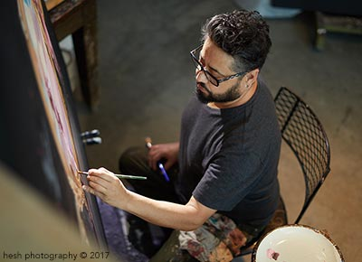

1968
Luis Sanchez is an artist who is not limited to any one genre, rather, he is a master at many.
A true Renaissance man, he excels at figurative and abstract painting, found object mixed-media work, delicate shadowboxes, bronze figurative sculpture, murals, and has even designed a line of artful ceramic clocks.
Selected Exhibitions
2022
Mash Gallery - A GO GO II - Los Angeles, CA - group exhibition
2021
Fabrik Projects - Skin, Feather & Fur - ArtVirtualy.com - virtual exhibition
CASA of Los Angeles - Annual fundraiser - online event/fundraiser
2020
Made by Millworks - Keep it Zen - birds, Long Beach, CA - solo exhibition
2019
Castelli Art Space - "About Men" - Los Angeles, CA - group exhibition
Azul Gallery - 3nd Annual Summer Soiree, San Pedro, CA - fundraiser
Space 42 - Permanent Artist, Jacksonville, FL - group exhibition
A Vision For Art - Fundraiser Gala, Jacksonville, FL - group exhibition
Laurent Proneur Gallery - Immigration Celebration Part 2, LA, CA - group exhibition
Search+Resq Art Space - Private group exhibition, Los Angeles, CA - group exhibition
Artistic Edge Gallery - Urban Nature, Long Beach, CA - solo exhibition
2018
Azul Gallery - Summer Soiree, San Pedro, CA - fundraiser
Search+Resq Gallery - Private group exhibition, Los Angeles, CA - group exhibition
2017
Azul Gallery - Summer Soiree-Fundraiser - San Pedro, CA - group exhibition
HuZ Gallery - "Looking in, Looking out" - San Pedro, CA - solo exhibition
Pac Arts Gallery - Art Tank - San Pedro, CA - group exhibition
2016
Pac Arts Gallery - Nu Landscape, framed prints - solo exhibition
Premio Bugatti Prize - Finalist. 2-year traveling show thru Italy - traveling exhibit
2015
Evan Lurie Gallery - LA Art Show, Art Fair - Los Angeles, CA
Evan Lurie Gallery - ARTEXPO, Art Fair, New York, NY
2014
Evan Lurie Gallery - Art Basel Art Fair, Red Dot - Miami, FL
Private sculpture unveiling - Los Angeles, CA
2013
Evan Lurie Gallery - Scope. Art Basel Art Fair - Miami, FL
Evan Lurie Gallery - Hamptons Art Fair - Hampton, NJ
Evan Lurie Gallery - NY Affordable Art Fair - New York, NY
Evan Lurie Gallery - Miami International, Miami, FL
2012
Royal West Academy - Natural, Unnatural, Bristol, UK - Int’l exhibit
Evan Lure Gallery - NY Affordable Art Fair, New York, NY - art fair
Create Fixate - I Art You, Los Angeles, CA - group exhibition
Evan Lurie Gallery - Miami International, Miami, FL
Evan Lurie Gallery - Palm Beach Art Fair, Palm Beach, FL - art fair
2011
Create Fixate - Eleven X eleven, art fundraiser, LA, CA - art donation
Evan Lurie Gallery - Art Basel Red Dot Art Fair, Miami, FL - art Fair
Art Share - Hispanic Heritage Month, LA, CA - group exhibition
Terrell Moore Gallery - Portraits of the fallen memorial - presentation
The Factory Gallery - Fabrik magazine Int’l art competition - group exhibition Winners
The Factory Gallery - Los Angeles, CA - group exhibition
Evan Lurie Gallery - Of an Early Manner, Carmel, IN - group exhibition
2010
Lois Lambert Gallery - Warriors, Santa Monica, CA - solo exhibition
Hive Gallery - Master Blasters of Sculpture - group exhibition
Wanderlust Festival - North Lake Tahoe, CA - group exhibition
Lightning in a Bottle - Art Festival, Santa Barbara, CA - group exhibition
2009
Dialect Gallery - Grand Opening - group exhibition
2008
Lightning in a Bottle - Art Festival, Santa Barbara, CA - group exhibition
Glass Garage Gallery - Lucent Dossier art show - group exhibition
2007
Lurie Gallery - Grand Opening, Indianapolis, IN - group exhibition
Red Dot Gallery - Wreckage Redemption, LA, CA - group exhibition
Andrea Schwartz Gallery - Summer in South Park2, SF, CA - group exhibition
Lighting in a Bottle - Weekend Event, Santa Barbara, CA - group exhibition
Roq La Rue Gallery - New Works, Seattle WA - group exhibition
2006
MJ Higgins Gallery - Figure it out!, Los Angeles, CA - group exhibition
Soho Gallery - Abstracts, Studio City, CA - solo exhibition
Lurie Galleries - New Works, Miami, FL - group exhibition
Studio E Gallery - Abstracts, Palm Beach gardens, FL - group exhibition
2005
Bettcher Gallery - Material Whirled, Miami, FL - solo exhibition
LA Shanti - Aids Art Auction, Los Angeles, CA - auction/benefit
Transport Gallery - Flesh Machines, Los Angeles, CA - group exhibition
David Lawrence Gallery - Urban Dwellings, Beverly Hills, CA - solo exhibition
LA Convention Center - Latin Business Assoc. Expo, LA, CA - solo exhibition
Museum of Crafts &Folk Art - Tar Fest 2005 Festival, Los Angeles, CA - group exhibition
Studio E Gallery - Abstracts, Palm Beach Gardens, FL - group exhibition
2004
Glass Garage Gallery - Surface tension, W. Hollywood, CA - solo exhibition
Transport Gallery - x1 , Los Angeles, CA - group exhibition
Soho Gallery - Abstracts, Studio City, CA - group exhibition
World Fashion Awards - Private Exhibition, Los Angeles, CA - group exhibition
Lurie Fine Art Gallery - New Works, Boca Raton, FL - solo exhibition
2003
Atelier 31 Gallery - Urban Burn, Seattle, WA - solo exhibition
Glass Garage Gallery - Exotica, Erotica, W. Hollywood, CA - group exhibition
Studio E Gallery - Abstracts, Jupiter, FL - solo exhibition
Soho Gallery - Crossing Boundaries, Studio City, CA - group exhibition
Hangar 1018 - The MAX group show,Los Angeles, CA - group exhibit
2002
Glass Garage Gallery - Foreign Figures, W. Hollywood, CA - solo exhibition
Atelier 31 Gallery - Abstract Works, Seattle, WA - solo exhibition
Studio E Gallery - Ancient Future, Jupiter, FL - group exhibition
Bellevue Art Museum - Auction, best of show, Bellevue, WA - auction/benefit
2001
Atelier 31 Gallery - Creating Myth from Mud, Kirkland WA - solo exhibition
Atelier 31 Gallery - Birds-Invitational, Kirkland, WA - group exhibition
In conjunction with Bellevue Art Museum
Bellevue Art Museum - Auction, best of show, Bellevue, WA - auction/benefit
Fiesta Latina Art Auction - Auction, Westin Hotel, Seattle, WA - auction/benefit
Port Angeles Fine Arts Cntr - Figure Northwest, Port Angeles, WA - group exhibition
2000
Atelier 31 Gallery - At a Glimse, Kirkland, WA - solo exhibition
Fifth Season Gallery - A Glimpse, Tracy, CA - solo exhibition
Belevue Art Museum - Auction, Bellevue, WA - auction/benefit
1999
Atelier 31 Gallery - Sculptures & boxes, Kirkland, WA - group exhibition
Garden’s & Sunspaces - Shadowboxes, Duvall, WA - group exhibition
New York Int’l Film Festival - New Works, Madison Square Garden, NY - solo exhibition
1998
King County Gallery - New Works, Seattle, WA - solo exhibition
Tule Gallery - Ancient Future, Seattle, WA - solo exhibition
NW Folk Life Festival - Los Colores, Seattle, WA - group exhibition
1997
Galeria Coqui - Post Industrial, Seattle, WA - solo exhibition
Agora Gallery - Metamorphosis, New York, NY - group exhibition
1996
Spazzo - private exhibition, Bellevue, WA - solo exhibition - funded by Windemere Real Estate
Garden’s & Sunspaces - Shadowboxes, Duvall, WA - group exhibition
Nido - Eclectic Works, Seattle, WA - solo exhibition
Found Objects - Cajas Majicas, Seattle, WA - solo exhibition
Frank & Dunya - Cajas, Seattle, WA - solo exhibition
1995
Veritables - New Works, Seattle, WA - solo exhibition
San Marino Gallery - Medieval Collection, Bellevue, WA - solo exhibition
Les Arts - New Works, Los Angeles, CA - solo exhibition
1994
Ethan Harrington Studios - Private Exhibition, Seattle, WA - group exhibition
Nido - Retablos, Seattle, WA - solo exhibition
Found Objects - Icons, Seattle, WA - solo exhibition
1993
Fast Forward - New Works, Seattle, WA - solo exhibition - three consecutive sold out shows
Commissions
2022
Puzzo Residence 2 paintings - Living & dining room, Burbank, CA
The Pacific Building - Faux Marble tiles, Long Beach, CA
2021
"Taking A Note From Nature" - Residential Mandarin Duck, Sausalito, CA
"Morning Light" - Residential Crow painting, Seattle, WA
2020
Washington Elementary School mural - Outdoor courtyard mural, Redondo Beach, CA
Seed & Flame- Sculpted Jizo statues - Production for company kits, LA, CA
Master Bathroom Koi mural - Residential bathroom, Long Beach, CA
Guest Bathroom Cranes mural - Residential bathroom, Long Beach, CA
Mural barn doors Master bathroom - Residential door, Long Beach, CA
Mural bard door guest bathroom - Residential door, Long Beach, CA
"Follow Your Spirit" Horse painting - Residential, living room piece, LB, CA
2019
Bill Hair, Los Angeles, CA - Butterfly Memorial Painting
2018
San Pedro Waterfront Arts Distric - DOT Utility Box Painted
Punta Cabras Restaurant – Outdoor murals and indoor painting décor, Santa Monica, CA
Art Deco Mural Cheese shop- Indoor mural for new cheese shop, San Pedro, CA
2017
Charlie Puzzo, Burbank, CA - Mural outside music studio
2016
City of Los Angeles Mural - "Soulful Melody" 100' x 20' mural - Warner Grand Theater, San Pedro, CA
Art's Table Restaurant Mural - "Art & Margo" 15' x 6' mural - Santa Monica, CA
San Pedro Waterfront Arts District - Utility box painted
2013
Nate Seubert, Glendale, CA - "Amongst our Realm" - Living room piece
Sharon Franklin, Highland Park, CA - "El Absinthe" - Living Room piece
Ashley Wolf,Hollywood, CA - "Se Concentrer sur les oiseaux" - Living Room piece
2012
Jeff & Lisa Probst, Los Angeles, CA - "The Congregation of kindred spirits" - Main dining room
2007
Shawn Ebra, Los Angeles, CA - Residential - Family portrait
Carol Salsbury, Kona, Hawaii - Residential - Living Room piece
2006
Sebastian Taheri, Los Angeles, CA - Residential - Sister as subject
John Gableman, Lincoln, KS - Residential - Living room piece
Chrisopher Blue, Seattle, WA - CD cover commissioned
2005
Tom Zdon, Miami, FL - Residential-Master Bedroom piece
Lucia De Garcia, Los Angeles, CA - Book cover commissioned
Mark DiPaola, Venice, CA - Residential - Master bedroom piece
Lori Burnett, Everett, WA - Residential - Father as subject
2004
Mark Hughes, San Francisco, CA - Residential - Living Room piece
Rachel Schindler, London, UK - Residential - Living Room piece
Edwina Hull, Los Angeles, CA - Residential - Living Room piece
Stacy Kovats, Kirkland, WA - Residential - herself as subject
2003
Lori Burnett, Lake Stevens, WA - Residential - Kids as subjects
2002
Kids N’ Us, Everett, WA - Commercial - 15 murals for learning school. Commissioned by Lori Burnett
2001
Garth Macleod, Kirkland, WA - Residential - Parents as subjects
2000
Kids N’ Us, Everett, WA - Commercial - 10 murals for learning school. Commissioned by Lori Burnett
Melody Potter, San Francisco, CA - Residential - Living Room piece
1999
Garth Macleod, Kirkland, WA - Residential - Master bedroom piece
Lori Burnett, Everett, WA - Residential - son’s bedroom murals
Kids N’ Us, Woodinville, WA - Commercial - 13 murals for learning school. Commissioned by Lori Burnett
1998
Richard Tait, Bainbridge Island, WA - Residential - Bedroom piece for wife
1997
Café Infinito, Bellevue, WA - Commercial - Murals and painting for Bistro
Hal & Francoise Kerry, Seattle, WA - Residential - Living room piece/sculpture
Born in 1968, Luis lived the first ten years of his life in Mexico City with his family (a Cuban born father who was also a fine artist, a Mexican-Lebanese mother, and an older brother and sister.) It seems art was always his destiny, as his mother had very strong dreams and visions of him as a sculptor during her pregnancy, and in fact wanted to name him Michelangelo. Thankfully, his father intervened, but her premonition was in fact, accurate.
Luis is best known for his realistic paintings of beautiful subjects (his friends) set in somewhat surreal circumstances, painted on his signature highly-textured canvases that resemble degraded stucco. This recreation of the walls he remembers from his childhood in Mexico City gives his work a most unusual quality – melding the ancient past with present day fashionable participants, and a question about what the future holds in the mysterious scenes he paints. His usually large works are mesmerizing examples of trompe l'oeil, leaving viewers with the impression that he has used photography, collage, or other techniques, when he has only dexterously used the brush.
The Sanchez family immigrated to the United States in 1979, and after graduating from high school in 1987, Luis attended Cornish College of the Arts in Seattle. But after a lifetime of chronic kidney disease and years of dialysis, Luis was forced to drop out of school to receive a kidney transplant in 1993. Unable to return to school, Luis focused on refining his drawing techniques, and began painting from his bed. He learned the subtleties of human anatomy through books, sometimes sketching for up to twelve hours a day. "My transplant was a rebirth. It is difficult to explain, but it certainly put life, everyone in it, and everything, in crystal clear perspective." His work emanates the energy, discipline, and drive of someone who has gotten a third chance, and now lives life to the fullest, continually creating. Luis had a second successful kidney transplant in 2011, which continues to enrich his life, with an innate positive attitude that is certainly inspiring and infectious.
Recently, his mother's intuition ignited something new to emerge. A seemingly random comment, "You should stop painting and focus on sculpture," struck a nerve in the artist, who had been contemplating this himself. Instinctually knowing it to be the correct move, he embarked upon a new journey, and has since created a completely original body of complex figurative work in bronze. "The New Alchemy" is a series that is inspired in part by the Industrial Revolution, and in part highlights the powerful machine of mankind itself. Of course he continues to paint and preparing for two original collections on canvas, murals around the city and a new line of hand-painted clothing online store.